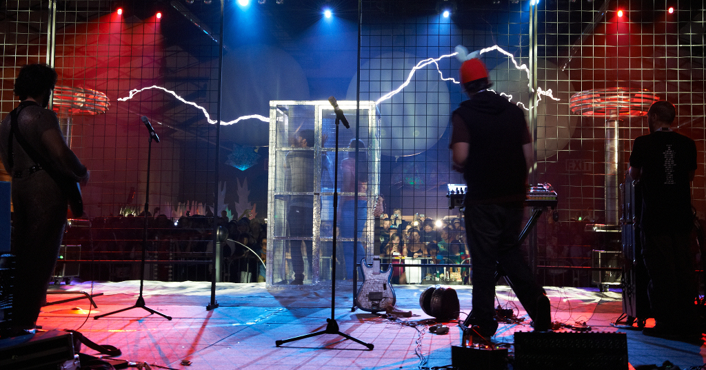

Some Thoughts on Faraday Bags and Operational Security
I recently took a trip to Moscow to interview National Security Agency whistblower Edward Snowden about operational security. In the article I published on The Intercept, I mentioned that I used a faraday bag.
Our first meeting would be in the hotel lobby, and I arrived with all my important electronic gear in tow. I had powered down my smartphone and placed it in a “faraday bag” designed to block all radio emissions.
Since I published my interview, many people have asked me for more information about this faraday bag — which product did I get, what does it protect against, how does it work? So here are some quick thoughts on the topic.
What are faraday bags?
Faraday bags, or more generally, faraday cages, are named after the brilliant scientist Michael Faraday. If you’re a nerd, I recommend watching the 10th episode of Neil DeGrasse Tyson’s Cosmos to learn more about him.
They’re made of a material that blocks electric fields from passing through it. Smartphones have a ton of different built-in radios: GSM, CDMA, 2G, 3G, 4G, wifi, bluetooth, NFC, GPS, and others. Each of these communicates wirelessly by sending and receiving information through the air in the form of radio emissions on different frequencies. If you put your smartphone inside of a faraday bag, it might be listening for incoming radio emissions, but none will reach it, and it might be attempting to communicate to the outside, but all of its messages will fail to penetrate the bag.
Which one should I buy?
I bought my faraday bag on Amazon. I didn’t have a particular product in mind; I basically just read reviews and got a nice one that was a little on the bigger side so that I could fit multiple phones, and also my passport (which has an RFID chip, which also communicates using radio emissions).
It doesn’t particularly matter which product you choose, but make sure that you test it after you get it to confirm that it works. Testing it is easy enough. Put your phone inside the bag, and then use another phone to try calling it. If your phone rings, it doesn’t work. You can also test data in a similar fashion — try sending yourself a notification over data (like a Facebook message) and see if your phone receives it while it’s inside the bag.
Why might this be useful for operational security?
First, assume that your smartphone is hacked and that the attacker can utilize all of its radios and sensors. Also assume that your attacker can get information from third party companies, such as your cell phone carrier, which will know your location and be in a position to eavesdrop on much of your phone usage.
Smartphones are crazy useful, so it sucks to not use them just because you can’t trust them. Instead, you can use faraday bags to selectively keep certain information away from your phone, despite the fact that you can’t trust it.
If you carry your phone around with you, your attacker gets to learn your location. From when you turn on your phone after your airplane lands, to taking public transit or a taxi to your hotel, to going out for dinner or drinks, or anything else — the attacker can see your exact location.
So if you want to have a meeting without revealing to your attacker where this meeting is taking place (your attacker can likely infer who you’re meeting with based on what other phones are in the same location), but you don’t want to leave your phone in your hotel room, you can safely bring it with you inside a faraday bag, because your phone itself won’t be able to determine its location. It may try to, but those signals won’t penetrate the material of the bag.
Your phone might be spying on you in other ways, too. It has a microphone, so it could be listening to your conversations and streaming them back to your attacker over the internet, or using some other wireless technology like wifi or bluetooth. Keeping your phone in a faraday bag will prevent your phone from communicating at all.
But here’s an important caveat: Your phone could be listening to your conversations and storing them on disk, waiting for an internet connection. As soon as you take your phone out of your faraday bag, it can use the internet to upload recorded audio to your attacker.
Faraday bags block electric fields, but they don’t block sound. If you don’t want your phone to overhear a conversation, just putting it in a faraday bag isn’t enough. You also need to put it out of earshot. Put it in a different room, muffle it under some pillows, or put it in the refrigerator.